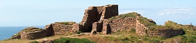

Lé Châté d'Gros Nez

Lé vièr Chàté d'Gros Nez a tréjous présenté un problème à nouos historiens et topographes, et acouo à ch't heu nou-s-en reste à jé n'sai. J'eus l'pliaîsi d'agi comme dgide et conférencyi à L'Assembliée d'Jèrriais l'année passée quand chutte compangnie d'Jèrriais distindgis fit s'n excursion du sé annuelle lé 31 dé Juillet.
Lé jour d'auprès iun d'mes anmîns m'dit: "J'pense bein qu'tu dis à t'n audience qué n'y'avait absolument rein d'connu entouor et pis qu'tu t'mîns quédaine à lus en dithe un tas d'tchi!"
J'êprouvis à diviser man discours en trais parties: (1) S'n architectuthe, (2) S'n histouaithe - actuelle et supposée - et (3) S'n utilité et sa raison d'être comme “fortification”. Ch'fut gentiment aîsi dé pâler au sujet d'la preunmié et d'la traisième partie, car j'étions tous attroupés en d'dans des ruinnes - sus l'Gardîn du Châté.
S'n Architectuthe
La construction originnale fut bâtie hardi en forme d'ellipse; du nord au sud la londgeu 'tait 75 vèrges et dé l'est au ouêst eune laize dé 65 vèrges. Quant à la dgèrte, les muthales tout l'tou avaient eune londgeu dé 250 vèrges.
Eune êtude des mâsuthes vouos donne raison à craithe qué chutte muthâle dé d'houors fut la seule du point d'veue dé d'fense; si, don, oulle 'tait pèrchie par l'ennemîn et l'entrée dé d'vant forchie, ch'tait pathé pouor les défenseurs à mains tch'i' n'gardissent d'la rêsèrve en d'dans du Châté auve tchi pouver achouêmi l's agresseurs.
Les pus fortes parties du Châté 'taient au sud et au ouêst. Ichîn au ouêst y'avait eune muthale comme barriéthe et en d'vant d'l'entrée y'avait eune fosse. Dé châque côté d'l'entrée sé mâtait eune forte tou à êtage ou bastion. Les muthâles dé ches tours avaient eune êpaisseu d'siex pids, atout d's ouvèrtuthes fendues pouor des flièches ; lé ief dé chatcheune était pliat et à remparts. Du haut d'ches tours ou bastions, ou l'travèrs des ouvèrtuthes, les arbalêtchièrs pouvaient tither lus flièches à coup seux sus autchun attatcheux tch'avait ieu l'couothage d'appraichi d'la fosse. Ches mêmes arbalêtchièrs étout pouvaient fliantchi des projectiles par dessus les remparts.
Il a tchiquefais 'té suggéthé qué eune manniéthe comme tchi qu'les envahisseurs éthaient peu entrer dans l'Châté 'tait qué l'cap'taine ordonnîsse lé preunmié assaut d'par lé ouêst a seule fin qu'les arbalêtchièrs eussent à s'n aller d'chu côté-la, et pis d'èrbrousser c'mîn et pénétrer l'entrée aîsiement!
Les excavâtions tchi fûtent faites y'a bein d's années et pis étout y'a deux ans dêcouvrîtent les fondations dé plusieurs pétites maîsons
ou habitacl'yes en d'dans du Châté. Les gens spécialisées entouor les forts militaithes ont r'mèrtchi qué l'manque dé d'meuthe dans l'Châté pathaît mouontrer qu'la dgèrnison gardée là n'tait pon hardi grande et qué v'la tchi fut bâti comme lieu d'èrfuge à l'occâsion d'attaques v'nant du sud d'l'Ile, et pas comme eune fortèresse à rav'nîn au Châté d'Gouôrray.
Mais y'avait un d'savantage: pas d'pits. I' d'vait faller aller qu'si l'ieau fraîche d'eune èrsource à eune affaithe dé 200 vèrges au seur-vouêt d'l'entrée. Assa, i' d'vaient aller remplyi lus sillots là et garder l'ieau dans tchique sorte d'citèrne à l'întérieur du Châté.
 L'architectuthe des ruinnes pathaît nouos dithe qué l'Châté d'Gros Nez fut bâti dans la preunmié maîntchi du 14e siècl'ye et ch'la à cause dé, (a) s'n arche pointue, (b) les remparts du haut d'l'arche, (c) les corbieaux pûtôt grossièrs tch'étaient aut'fais suspendus ès côtés. Et eune suggestion est tch'i' fut bâti quand Jean des Roches 'tait Gardgien des Iles dé 1328 à 1330.
L'architectuthe des ruinnes pathaît nouos dithe qué l'Châté d'Gros Nez fut bâti dans la preunmié maîntchi du 14e siècl'ye et ch'la à cause dé, (a) s'n arche pointue, (b) les remparts du haut d'l'arche, (c) les corbieaux pûtôt grossièrs tch'étaient aut'fais suspendus ès côtés. Et eune suggestion est tch'i' fut bâti quand Jean des Roches 'tait Gardgien des Iles dé 1328 à 1330.
Histouaithe
Quand l'Angliétèrre et la Nouorrnandie étaient souos la régie d'un rouai n'y'éthait ieu autcheune raison d'aver un châté la, mais auprès 1204 et la pèrte dé la Nouormandie continentale les Angliais vîntent à réaliser l'împortance dé lus position et d'pis chu temps-là c'menchîtent à dêvelopper lus piêssance sus la mé. Les rouais angliais sûtent tous qué l's Iles dé la Manche lus valaient tchiquechose pouor la protection d'lus commèrce.
Dé 1204 à 1373 Jèrri fut attatchi ou envahi pas mains dé neuf fais. La neuvième fais, en 1373, Bertrand du Guesclin assiégit l'Châté d'Gouôrray et rêussit à prendre lé d'houors, mais né put arriver au donjon. San lieutenant, lé Duc de Bourbon, attèrrit et avanchit dans l'Ile. I' prînt l'Châté d'Gros Nez sans qu'y'eusse dé résistance. Ch'la nouos est dit dans “ Les Chroniques du Bon Duc Louis de Bourbon", et ne v'là la seule chose historique définnitive tch'i' y'ait entouor chu châté.
Mais i' y'a eune allusion îndirecte dé s'n existence quand, en octobre 1406, lé rôdeux d'mé castillan, Pero Nino, et Pierre de Pontbriand attèrrîtent dans la Baie d'la Ville (ou Baie d'St. Aubîn) et battîtent les Jèrriais sus Les Mielles (entre L'Esplanade et L'Mont ès Pendus). Les prisonnièrs captuthés dîtent à Pero Nino tch'i' y'avait chînq châtchieaux forts dans l'Ile, tous souos l'c'mandment d'un cap'taine angliais - Gouôrray, Gros Nez, Sédeman, L'Câté d'Lé et L'Câté d'Rôzé. Mais nouot' Châté d'Gros Nez né fut pon visité par les Espangnos chutte fais-là.
Y'en a tch'ont pensé qué quand de Maulevrier prînt possession d'Jèrri en 1461 i' captuthit l'Câté d'Gros Nez, et qué quand Messire Richard Harliston vînt au s'cours dé l'Ile en 1468 i' cachit les Français dé Gros Nez, mais i' n'faut pon oublier qué chenna n'est pon du tout seux.
En 1540 lé Chaté 'tait en ruinnes, car sus la carte géographique Leland dé ch't année-là v'là tch'est mentionné en latîn. L'êp'lage du lieu sus l's aut' cartes dé pus tard est întérêssant. Popinjay, en 1563, êcrit ch'la Grounyshes; Norden, en 1595, Gronesse; Mercator dit Grosnese en 1601 et pis, en 1696, Coronelli dit Grosnese Castel.
La tchuthieuse chose est qué dans les Rôles d'Assises dé 1209 nou n'en pâle pon, pas pus qu'dans les Extentes dé 1331 et 1528. Et né v'là un problème dans l'histouaithe du Châté, car ché s'sait drôle tch'il éthait 'té bâti par un partitchulyi sans pèrmission ou licence dé la Couronne!
Mais dans l'Extente dé 1607 nou trouve eune réféthence întérêssante ès ruinnes. Les Commissaires Rouoyaux siégeant en Jèrri fûtent appelés a décider entouor un procès présenté par lé Protchuleux Général dé chu temps-la contre Philippe de Carteret, Seigneu d'St. Ou, “pouor aver tînt sa cour sus l'Châté d'Gros Nez ”.
Les ardguments du Protchuleux 'taient basés sus quat' raisons. Preunmiéthement, qué l'Chaté s'trouvait sus l'Fieu d'L'Êta appartenant à Sa Majesté (eune dêcliathation hardi douteuse) ; deuxièmement, qué, étant un châté, il appartenait a la Couronne, comme faisait l'chein d'Gouôrray; traisièmement, qué l'Seigneu d'St. Ou n'pouvait dgéthe fourni d'preuve tch'il 'tait l'propriêtaithe des ruinnes.
Eh don, s'lon l'Protchuleux, tout ch'tchi s'était passé à la dreine séance dé la Cour Seigneuriale tait nul et dé nul êffet.
D'l'aut' côté, lé Seigneu prétendit qué l'Châté 'tait en d'lacres et rein qu'eune pile de pièrres, et qué il appartenait au Seigneu d'St. Ou, ses anchêtres en ayant 'té l's augnièrs paisibl'yes dé temps immémorial. Lé sieur de Cart'ret am'nit un fliotchet d'vièrs hommes tchi prîntent sèrment qué les d'Cart'rets en avaient 'té en possession pouor bein d's années, et tch'i' s'rapp'laient dé chein tch'il' avaient ouï et veu dans la Cour. Et, en fîn d'conte, lé Seigneu dit tch'i' n'avait janmais ouï pàler d'un Fieu d'L'Êta!
Les Commissaires, ayant trouvé qué l'Châté n'était qu'eune pile dé pièrres d'eune valeu d'20 sou, décidîtent dé laîssi l'Seigneu d'St. Ou en possession “jusqu'à qu'miyeu preuve sait faite d'la part dé Sa Majesté".
Tchitch'un a suggéthé qué quand Philippe de Cart'ret eut pèrmission en 1483 de créneler san mangni à St. Ou, lé Châté d'Gros Nez fut fortifié comme lieu d'èrfuge pouor lé Seigneu et ses t'nants en temps d'dangi. Y'a tchique îndication au sujet dans “Caesarea” par Jean Podêtre (Poingdestre), la description du Châté étant donnée dans chu livre comme: “Eune faillie affaithe, comme eune porte sans châté en d'dans, mais r'nommé comme ayant 'té un lieu d'rétraite à Philippe de Carteret, Seigneu d'St. Ou, et san parti contre Pierre dé Brézé (Maulevrier), tchi s'comptait l'maître absolu d'l'Ile au temps d'Henri VI." Mais il est connu à ch't heu qué l'Ile fut entchiéthement otchupée par les Français.
Raison d'être
Tout ch'qué nou peut en dithe, don, du Châté d'Gros Nez, sé divise en deux r'mèrques définnitives.
Négativement, i' n'gardait dgéthe un havre, ni un mouoillage, ni un village. Ch'tait un bâtisse prînmitif en pièrre, jutchi sus ieune des parties les pus désèrtes d'l'Ile et fait sèrvi rein qu'en cas d'bésoin.
Positivement, dé ses remparts les batchieaux au liain, d'allant et dé v'nant, étaient souos obsèrvâtion et les messagièrs pouvaient porter mandaton au Châté d'Gouôrray toutes fais et quantes.
Le Châté d'Gros Nez fut un r'fuge pouor havrer les gens du Ouêst a l'occasion, et pus tard ès d'Cart'rets au c'menchement d'l'otchupâtion d'Jèrri par les Français, 1461. Mais l'întérieur du Châté né fut janmais considéthé comme à aver à t'nîn bouon pouor eune longue duthée.
Ph. Ahier
Lé Bulletîn d'Quart d'An dé L'Assembliée d'Jèrriais
Viyiz étout: